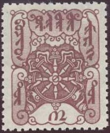
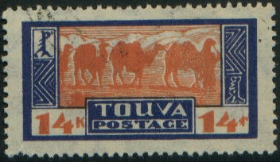

Top: 1, 2, 5, 8 and 10 k. Bottom: 30 k, 50 k, 1 R, 3 R and 5 R.
Return To Catalogue - Russia overview -Mongolia
Note: on my website many of the
pictures can not be seen! They are of course present in the
catalogue;
contact me if you want to purchase the catalogue.
Touva, a territory between Russia and Mongolia, issued stamps from 1926 on, often with very attractive designs. They were printed in Moscow. Most of them never arrived in Touva, however. They were directly sold to dealers. The stamp forger Bela Szekula seems to have had a hand in the appearance of these stamps (source: http://www.albumsmith.com/Tuva/p1934n1.htm ).

Top: 1, 2, 5, 8 and 10 k. Bottom: 30 k, 50 k, 1 R, 3 R and 5 R.
1 k red 2 k blue 5 k orange 8 k green 10 k violet 30 k brown 50 k black 1 R blue 3 R brown 5 R blue Surcharged (1927)
8 (red) on 50 k black 14 (red) on 1 R green 18 on 3 R brown 28 on 5 R blue



Small sized stamps 1 k black, red and brown (woman with tent in background) 2 k violet, brown and green (head of dear) 3 k black, green and yellow (goat in mountains) 4 k blue and brown (man in front of tent) 5 k black, blue and orange (person) Larger sized stamps 8 k brown, red and green (map) 10 k black, brown and green (arrow shooting) 14 k blue and orange (camels) Triangular stamps 18 k blue and brown (man keeping goats) 28 k green and black (tree and mountains) Smaller square sized stamps 40 k red and blue (men on horses wading through river) 50 k black, green and brown (woman making carpets) 70 k red and olive (man on horse) Lozenge shaped stamp 1 R orange and violet (people riding dears) Surcharged (1933) 35 on 18 k blue and brown 35 on 28 k green and black Overprinted 'TbBA POSTA' and some surcharged
'1 KOP' on 40 k red and blue '2 KOP' on 50 k black, green and brown (brown overprint) '3 KOP' on 70 k red and olive (blue overprint) '5 KOP' on 8 k brown, red and green 10 k black, brown and green '15 KOP' on 14 k blue and orange

'15' on 2 k yellow '35' on 15 k brown
1 k orange (man on horse) 2 k green (man in mountains) 3 k red (man, diamond shaped stamp) 4 k violet (tractor, diamond shaped stamp) 5 k blue (milking yak, lozenge shaped stamp) 10 k brown (camels, lozenge shaped stamp) 15 k lilac (hunting scene, lozenge shaped stamp) 20 k black (man shooting fox, lozenge shaped stamp)
1 k red (yaks with aeroplane, diamond shaped stamp) 5 k green (camels with aeroplane, diamond shaped stamp) 10 k brown (bird in forest with aeroplane, triangular stamp) 15 k red (design as 5 k) 25 k violet (goats with aeroplane, triangular stamp) 50 k green (design as 1 k) 75 k red (oxwagon with aeroplane, triangular stamp) 1 R violet (design as 1 k) 2 R blue (goats with aeroplane, triangular stamp)
1 k orange 3 k green (squirel) 5 k red 10 k lilac (fox, triangular stamp) 25 k red (triangular stamp) 50 k blue (mountain cat, triangular stamp) 1 T violet (moose, triangular stamp) 2 T blue (cow, triangular stamp) 3 T brown (camel, triangular stamp) 5 T black (bear, triangular stamp)
1 k orange (map, triangular stamp) 3 k green (lake and mountains, triangular stamp) 5 k red (man on horse near lake, triangular stamp) 10 k violet (lake with tree, triangular stamp) 15 k green (rock, diamond shaped stamp) 25 k violet (river, diamond shaped stamp) 50 k black (man on horse, diamond shaped stamp)

1 k green (arms; man on horse, diamond shaped stamp) 2 k brown (president, diamond shaped stamp) 3 k black (man with camel, diamond shaped stamp) 4 k orange (wrestling men, triangular stamp) 5 k lilac (arrow shooting, triangular stamp) 6 k green (design as 4 k) 8 k violet (design as 5 k) 10 k red (spearfishing man in canoe, triangular stamp) 12 k brown (hunting bear, triangular stamp) 15 k green (design as 10 k) 20 k blue (design as 12 k) 25 k red (cow herd, lozenge shaped stamp) 30 k violet (camel and train, lozenge shaped stamp) 35 k red (design as 25 k) 40 k brown (horse racing, lozenge shaped stamp) 50 k black (design as 40 k) 70 k violet (arrow shooting) 80 k green (horse riding) 1 A red (military camp) 2 A red (design as 1 A) 3 A black (people in camp) 5 A brown (war scene) Airmail, inscription 'AIR MAIL' 5 k black and lilac (man with cow, triangular stamp) 10 k lilac and yellow (ploughing, triangular stamp) 15 k brown (design as 5 k) 25 k lilac and yellow (man on horse with zeppelin) 50 k red and orange (women gathering) 75 k green (design as 25 k) 1 A green (dragon and earoplane, lozenge shaped stamp) 2 A red (design as 1 A) 3 A brown and lilac (design as 1 A)